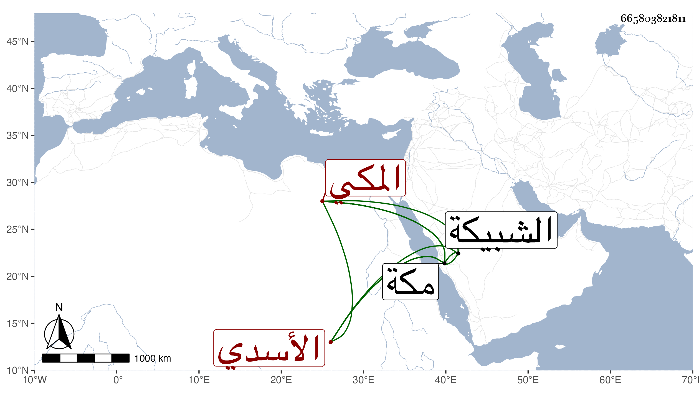

0902Sakhawi.DawLamic.ITO20230111-ara1.EIS1600.665803821811
Biography ID: 665803821811
أحمد بن أبي بكر بن علي بن عبد الله بن بوافي بفتح الموحدة والواووكسر الفاء ابن يحيى بن محمد بن صالح الشهاب بن الفخر بن الولي النور أبي الحسن الأسدي المعشمي بميمين أولاهما مفتوحة وبعدها عين مهملة ساكنة ثم شين معجمة مفتوحة المكي سبط البرهان الأردبيلي ويعرف جده بالطواشي . ولد في سنة خمس وستين وسبعمائة بمكة ظنا وحضر على العز بن جماعة بل سمع الضياء الهندي وفاطمة ابنة التقي الحرازي وعبد الوهاب القزوي وأجاز له الكمال بن حبيب وأخوه الحسين وآخرون ، وكان خيرا دينا متواضعا متقشفا في لباسه متعبدا منعزلا عن الناس معتقدا فيهم . مات في ضحى يوم الجمعة سابع عشر شعبان سنة تسع وعشرين وصلى عليه عقب صلاة الجمعة بالمسجد الحرام ودفن بالشبيكة من أسفل مكة بوصية منه وحملت جنازته على الرؤوس وشيعه أمير مكة علي بن عنان رحمه الله . ترجمه الفاسي في تاريخه وشيخنا في أنبائه والمقريزي في عقوده وابن فهد في معجمه .
